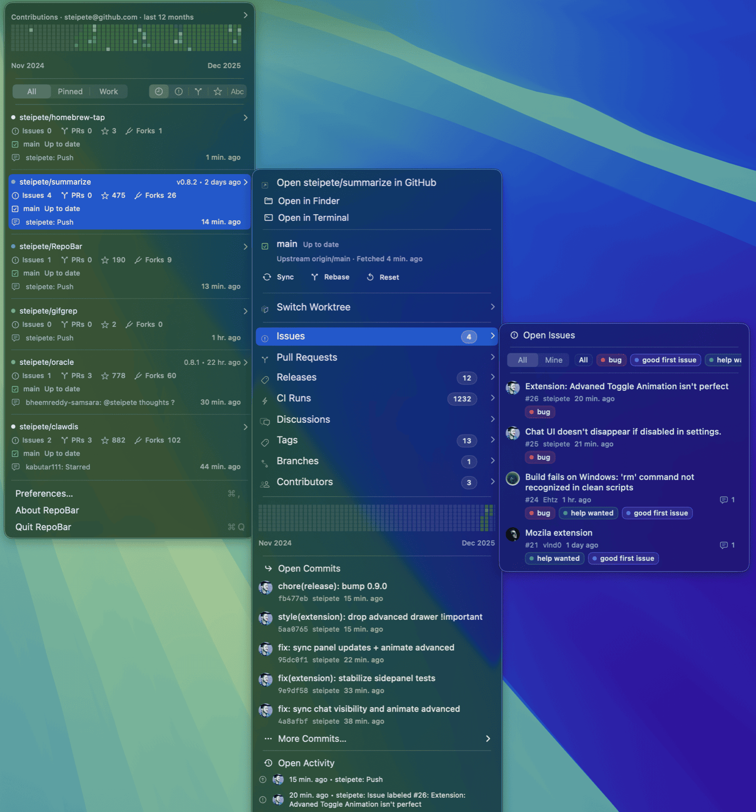

RepoBar keeps GitHub work visible without living in tabs. CI state, issues,
pull requests, releases, local checkouts, and rate limits — for every
repository you care about, one click from the clock.
Repository cards, submenus for issues and commits, contribution graphs, and local
Git state — all rendered natively, all one click deep.
Actual screenshot

Local first
Built for people who actually clone.
RepoBar scans a projects folder such as ~/Projects and matches local
checkouts to GitHub. Local state appears next to remote state — no second tool, no
IDE switch.
BranchCurrent branch and upstream tracking ref.
SyncAhead/behind counts versus the upstream branch.
DirtyStaged, unstaged, and untracked file summary.
WorktreesAll worktrees with their checked-out branches.
Auto syncOptional fetch + fast-forward on a cadence. Never force-pushes, never resets.
OpenOpen in Finder, Terminal, or your editor — straight from the submenu.
A repository browser, not a picker.
Preferences › Repositories searches every repository RepoBar can access — by
name, description, language, or topic — and lets you tag each one as
Visible, Pinned, or Hidden. Manual rules survive even when
a token rotation drops a repo from view, so access problems stay legible.
Authentication uses the
RepoBar GitHub App
for GitHub.com, with PAT fallback for SAML SSO and Enterprise. Tokens live in
the macOS Keychain on release builds.
Offline-ready
Opens from local data. Spends requests carefully.
A persistent SQLite cache holds ETags, response bodies, GraphQL results, recent
lists, and rate-limit state. And RepoBar reads GitHub backups in the same
Git-backed snapshot format that
gitcrawl.sh publishes.
One archive, two readers.
gitcrawl is a local-first
GitHub crawler that publishes a portable SQLite database via Git. RepoBar reads
the same snapshot shape — manifest.json plus per-table
tables/<table>/*.jsonl(.gz) files — and imports it into its
own cache.
When GitHub is rate-limited, offline, or having a day, RepoBar falls back to
the imported archive automatically. Issue and PR lists keep answering; the menu
never goes blank.
RepoBar owns its own cache and archive configuration. It never writes to
gitcrawl databases and never reads gitcrawl config — point it at any compatible
snapshot repository and it imports cleanly.
01gitcrawl.sh publishes a portable SQLite snapshot to a Git repo.
02RepoBar clones it and imports manifest.json into its own SQLite cache.
03Live GitHub requests are preferred while the budget is healthy and ETags are fresh.
04Rate-limited or offline? Archive reads serve issue and PR lists seamlessly.
05repobar archives update pulls the snapshot repo and re-imports on demand.
Automation
The same app, as a command.
RepoBar ships a repobar CLI alongside the app — same auth, same cache,
same archive paths. Use it for scripts, agents, diagnostics, or just because you
live in the terminal. --json for machines, --plain for
pipes.
SwiftPM with pnpm wrapper scripts. Xcode 26 / Swift 6.2.
git clone https://github.com/steipete/RepoBar && cd RepoBar && pnpm start
FAQ
Common questions.
Does RepoBar need access to all my repositories?
No. RepoBar uses the RepoBar GitHub App
for GitHub.com, which only sees what you let it see. Private organization repos
require the App to be installed on that org. If you need access outside the App
boundary (SAML SSO, fine-grained constraints, enterprise hosts), use a Personal
Access Token with repo and read:org.
How is data cached, and what's the gitcrawl.sh integration?
RepoBar persists REST ETags and bodies, GraphQL responses, recent lists, and
rate-limit state to its own SQLite database. It can also import GitHub backup
archives that follow the gitcrawl.sh portable-store
shape — a Git-backed SQLite snapshot with manifest.json and
tables/<table>/*.jsonl(.gz). When GitHub is rate-limited or
offline, archive reads keep the menu answering. RepoBar never writes to gitcrawl
databases or reads gitcrawl config.
Will it auto-sync my local checkouts?
Optionally. RepoBar can fetch and fast-forward clean repositories on a cadence.
It never force-pushes, hard-resets, or discards local changes. The
reposync doc
has the full rules.
What's the reference monitor?
An opt-in, cache-first watcher (Advanced settings). Copy something like
#123 or a commit hash anywhere on your Mac, and RepoBar resolves it
against cached issues, PRs, and commits in accessible repositories — falling
back to live lookups on cache misses. The best match appears as its own menu
bar item. Global monitoring requires the Accessibility permission.
Does it support GitHub Enterprise?
Yes. Configure the enterprise host and OAuth settings in Preferences › Accounts.
Multiple accounts are supported side by side, each with its own cache. TLS is
required.
Where do tokens live?
Release builds store tokens in the macOS Keychain. Debug builds and SwiftPM CLI
and test runs default to file-backed auth storage so local development does not
trigger Keychain prompts. Details in
auth-storage.md.
Is it free?
Yes. MIT licensed, free forever, no telemetry, no analytics, no account.